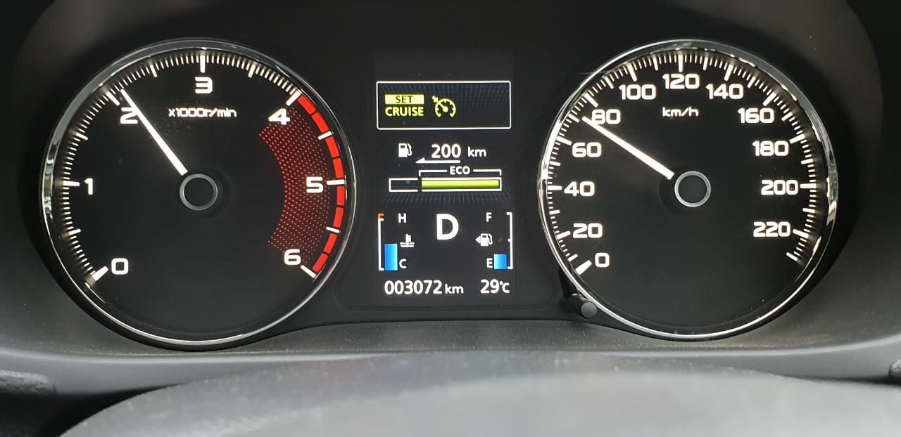
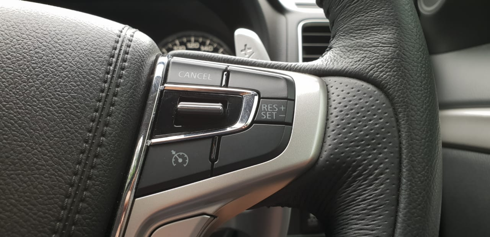

MENGENAL FUNGSI DAN KEGUNAAN DARI FITUR CRUISE CONTROL
MENGENAL FUNGSI DAN KEGUNAAN DARI FITUR CRUISE CONTROL
Sekarang ini nilai dari sebuah mobil tidak hanya dari sisi penampilan dan juga performanya saja, tapi juga mencakup apa saja fitur-fitur yang tersemat di dalam sebuah mobil. Fitur pada sebuah mobil menjadi salah satu poin penting yang dicari oleh konsumen.
Itulah sebabnya berbagai jenis kendaraan penumpang Mitsubishi Motors kini sudah dilengkapi dengan fitur-fitur canggih pada model-model yang dijual di Indonesia. Salah satu fitur yang ada di mobil Mitsubishi adalah Cruise Control yang tersedia di Mitsubishi Xpander tipe Ultimate. Selain itu juga ada fitur Adaptive Cruise Control, seperti yang ada pada Mitsubishi Pajero Sport Dakar terbaru.
Fitur Cruise Control sudah mulai banyak disematkan pada mobil keluaran terbaru. Fungsi utamanya, yaitu bisa melaju dengan kecepatan stabil, tanpa harus menginjak pedal gas terus menerus. Sehingga fitur ini dapat meringkankan kerja sopir, karena bisa mengistirahatkan kaki untuk beberapa saat.

Lantas bagaimana cara mengaktifkan fitur Cruise Control pada Xpander maupun Pajero Sport? Fitur ini sebenarnya baru bisa aktif pada kecepatan minimum 40 km/jam, sehingga kalau aktif di jalan yang padat dengan kendaraan bermotor lain, akan membahayakan. Jadi, buat pemilik mobil yang punya fitur seperti ini disarankan untuk mengaktifkan Cruise Control sebaiknya melihat kondisi jalan di sekitarnya, demi menjaga keamanan dan keselamatan bersama.
Cara penggunaannya pun cukup mudah, tinggal tekan tombol Cruise Control yang terletak di setir sebelah kanan. Ketika sudah dinyalakan, pada layar MID akan muncul logo Cruise Control lalu cukup dengan menekan tombol SET untuk mengaktifkannya. Setelah itu mobil pun akan melaju sesuai kecepatan terakhir saat tombol ditekan. Misalnya pada kecepatan 80 km/jam dengan fitur Cruise Control, pengemudi cukup mengendarai mobil hingga 80 km/jam dan lalu mengaktifkan fitur tersebut.
Pada tombol Cruise Control ini juga tersedia tombol +- yang berfungsi untuk meningkatkan atau mengurangi kecepatan mobil saat fitur ini aktif. Untuk mengakhirinya cukup menginjakkan kaki ke pedal rem, maka otomatis kendali mobil kembali kepada pengemudi.

Adaptive Cruise Control
Pada perkembangannya, fitur Cruise Control hadir dengan teknologi yang lebih maju yaitu Adaptive Cruise Control (ACC). Fitur ini lebih canggih karena menggunakan teknologi yang lebih tinggi termasuk untuk melakukan pengereman secara otomatis (adaptif). Mitsubishi Pajero Sport Dakar terbaru pun sudah dilengkapi dengan fitur Adaptive Cruise Control ini. Cara mengaktifkan Adaptive Cruise Control ini pun sama seperti Cruise Control biasa, melalui tombol pada lingkar kemudi.
Pada fitur ACC sudah menggunakan teknologi yang bertujuan untuk mendeteksi jarak dan kecepatan dengan kendaraan lain yang berada di depan dengan cara mengunci kecepatan mobil di depannya. Mobil akan mengerem ketika jarak mobil sudah terlalu dekat. Begitu juga ketika mobil mendeteksi jarak yang terlalu jauh dengan kendaraan di depannya, mobil akan menambah kecepatan sesuai dengan setingan kecepatan terakhir pada Cruise Control ini.
Teknologi pada fitur ACC akan memberikan input kepada sistem elektronik mobil untuk mengatur bukaan gas, transmisi, manajemen tenaga mesin, dan pengereman ketika fitur ini diaktifkan.